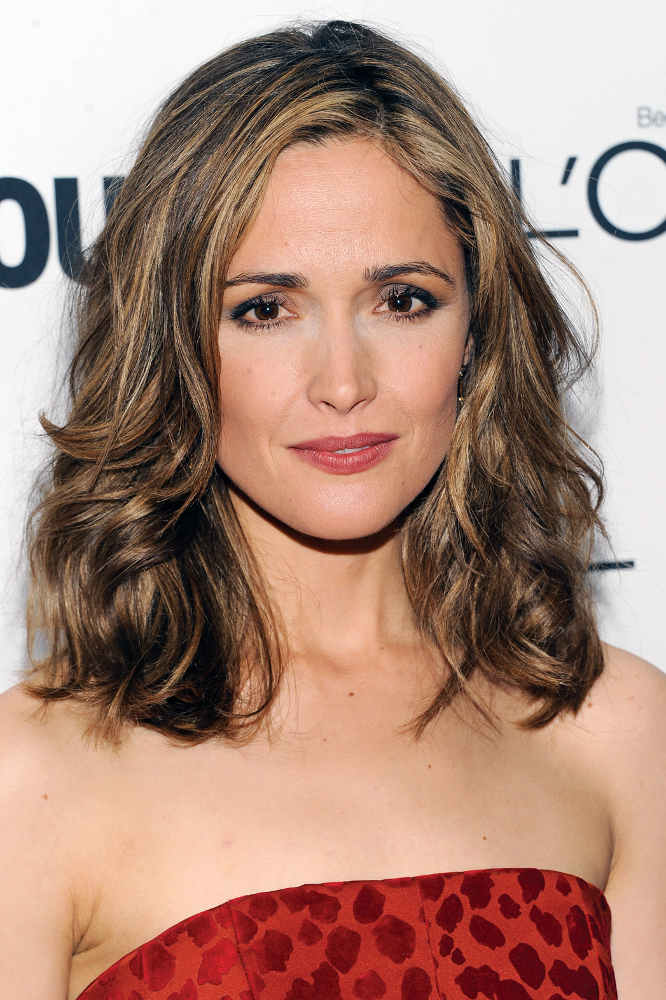
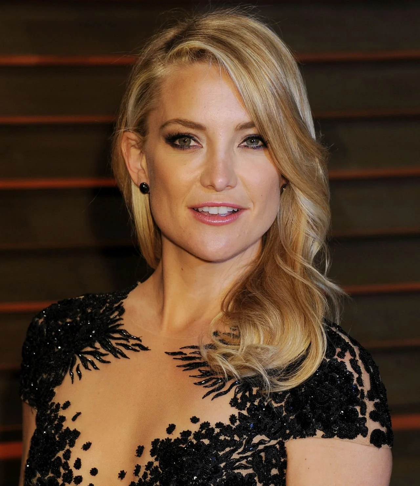
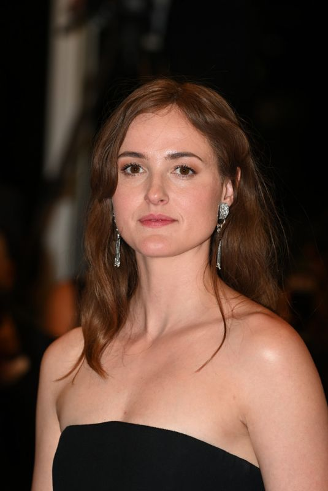

98th Annual Academy Awards
Melhor Atriz
Conheça as candidatas à Premiação do Oscar 2026 por Melhor Atriz
Vencedora
Jessie Buckley
Hamnet: A vida antes de Hamlet
Buckley é conhecida por sua intensidade crua, e aqui ela mergulha no luto e no misticismo. Sua atuação foca na conexão profunda com a natureza e na dor devastadora de perder um filho para a peste.
Aclamada por sua "presença terrena". Os críticos destacaram como ela consegue dominar o filme, transformando o que poderia ser apenas um drama de época em uma experiência visceral e quase espiritual.

Rose Byrne
Se Eu Tivesse Pernas, Eu te Chutaria
Byrne utiliza seu timing cômico impecável para mascarar uma profunda melancolia. Ela entrega uma performance que transita entre o sarcasmo defensivo e a vulnerabilidade absoluta.

Kate Hudson
Song Sung Blue
Hudson retorna às suas raízes musicais e dramáticas (lembrando seus tempos de Quase Famosos). Ela entrega uma performance vibrante, cheia de alma e com um otimismo resiliente que serve como o coração do filme.
A crítica celebrou seu retorno a papéis de substância. Sua química com Hugh Jackman foi descrita como "elétrica", e sua performance vocal foi elogiada por ser autêntica e emocionante, sem parecer caricata.
Emma Stone
Bugonia
Stone interpreta uma executiva de alto escalão que é sequestrada por dois homens convencidos de que ela é uma alienígena. Ela entrega uma atuação física e excêntrica, navegando pelo absurdo total com uma seriedade perturbadora.
Como é comum em suas colaborações com Lanthimos, a crítica exaltou sua coragem em assumir riscos. Ela foi descrita como "destemida", conseguindo ser simultaneamente aterrorizante e hilária em uma narrativa bizarra.

Renate Reinsve
Valor Sentimental
Reinsve consolida sua posição como uma das melhores atrizes da atualidade com uma performance sutil e cheia de camadas. Ela explora o ressentimento e a busca por identidade com uma naturalidade desarmante.
A crítica internacional destacou que Reinsve e Trier são uma combinação perfeita. Sua atuação foi chamada de "luminosa" e "profundamente inteligente", capturando perfeitamente as nuances das relações familiares disfuncionais.